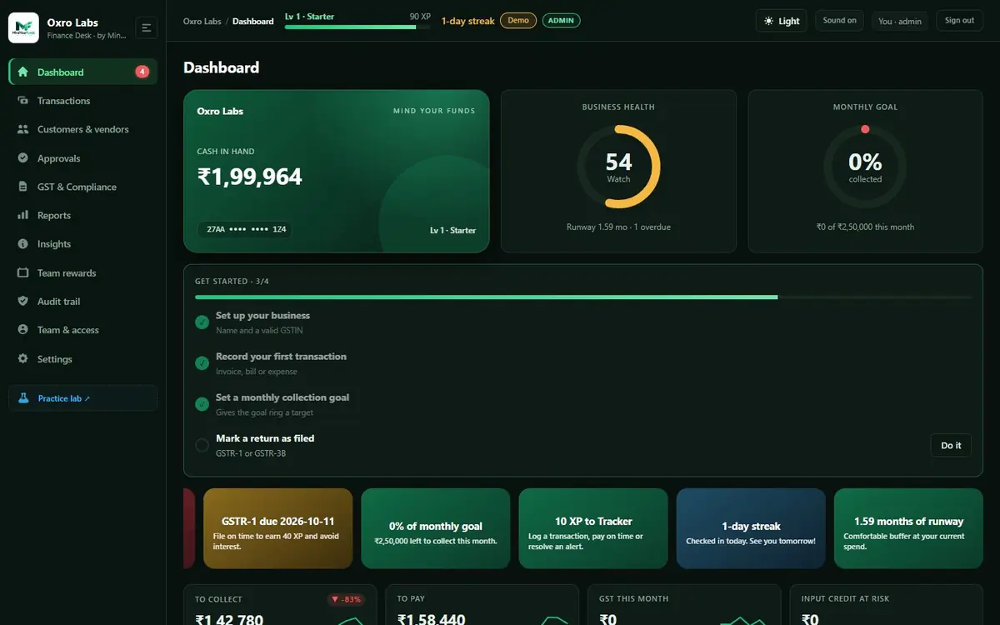
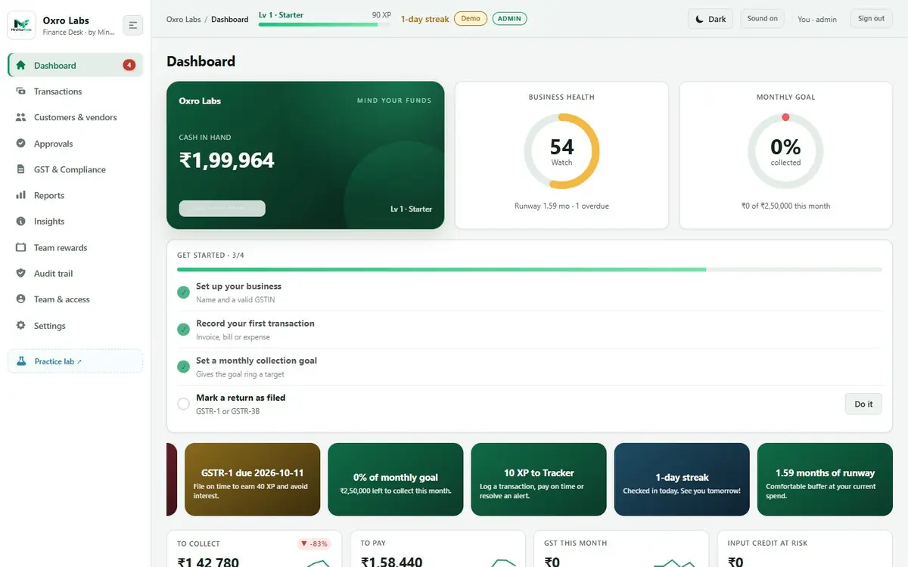

1
Ghost Twin: proof, not claims
The Practice Lab runs the same business and the same shocks twice: once with the crew, once without. In our simulation the unassisted twin ran out of cash on day 30 while the crew ended day 90 at a health score of 84.
One place for invoices, bills, payroll and GST. It warns you before a payment is late or a deadline is missed, asks for approval where it matters, and rewards the good financial habits.
Demo mode needs no account and keeps data in your browser. Free during the pilot.


Most tools record what happened. Finance Desk shows what it saved you, keeps a tamper-evident record of every decision, and makes the daily routine something people actually do.
The Practice Lab runs the same business and the same shocks twice: once with the crew, once without. In our simulation the unassisted twin ran out of cash on day 30 while the crew ended day 90 at a health score of 84.
Every action stores who did it, what changed and why, chained to the previous record with SHA-256. Edit history and the chain breaks, and the audit page shows it.
Roles (admin, finance, viewer) and approvals above a spend limit are enforced by row-level security and triggers, not just hidden buttons. Non-admin spend above the limit waits for an admin.
XP, streaks, quests, badges and a daily scratch reward are earned by collecting on time, filing on time and resolving alerts, never by screen time. Research reviews report mostly positive effects of gamification [7].
See your cash in 30 days if every customer pays late, and a 14-day look-ahead of what is due, so you act before the wave and not after it.
The AI CFO answers on totals such as cash, dues and runway. Names and GSTINs never leave your workspace, and every question is logged.
| Capability | Spreadsheets | Accounting apps | Banking apps | Finance Desk |
|---|---|---|---|---|
| Proactive risk alerts | No | Partly | Partly | Yes |
| GST credit check and filing calendar | No | Partly | No | Yes |
| Approvals with roles | No | Partly | No | Yes |
| Tamper-evident audit with reasons | No | No | No | Yes |
| Habit loop (XP, streaks, rewards) | No | No | Partly | Yes |
| Proof of benefit (Ghost Twin) | No | No | No | Yes |
A generalised comparison of typical tool categories, not of any named product.
Add invoices, bills, payroll and expenses, import a bank CSV, or set recurring entries.
GSTIN checksum, CGST/SGST/IGST split and input credit are checked as you type.
Ranked alerts with one-click actions. Approvals above your limit wait for an admin.
Each action is logged with its reason, and good habits earn XP, streaks and badges.
Built for owners without a finance team and for company teams that want a shared, auditable desk.
Runway, on-time collections and credit safety in one number.
GSTR-1 and GSTR-3B calendar, monthly position, input credit and interest estimate.
Directory with GSTIN autofill and one-click WhatsApp or email reminders.
Print or save a tax invoice with the CGST/SGST/IGST breakdown.
Profit and loss, receivables and payables aging, top parties, GST by month.
Import a CSV and match payments to open invoices and bills by amount.
Invite codes, email-domain lock, roles and an approval policy.
Light and dark themes, large text, high contrast, phone-friendly, installable.
Built on managed Postgres with row-level security, so each company only sees its own data, and every sensitive action leaves a trace.
GST rates, due dates and interest are simplified for planning. Always confirm with your Chartered Accountant before filing. AI answers can be wrong. See the Disclaimer and Terms.
Aligned with UN SDG 8 (decent work and growth), SDG 9 (industry, innovation and infrastructure) and SDG 16 (strong institutions) [10].
No. It gives planning estimates based on simplified GST rules. Confirm figures with your Chartered Accountant before filing.
In your company’s Supabase (Postgres) workspace with row-level security. Demo mode stores data only in your browser.
Admins see everything, including the company-wide audit trail. Finance users can add and edit records but cannot delete, approve or manage the team. Viewers are read-only.
No. The AI CFO receives aggregate numbers only, such as cash, dues and runway.
Yes. It is a responsive web app you can install from your browser, with light and dark themes, large text and high-contrast options.
It is free during the pilot. We will give notice before any pricing is introduced.
Yes. Transactions and the audit trail export as CSV or JSON, and reports can be printed or saved as PDF.
Open demo mode, load the sample company, and watch the alerts, GST position and rewards come alive.
Open Finance Desk